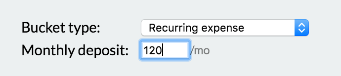
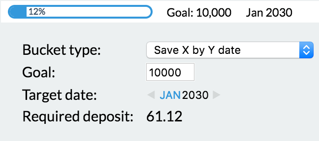
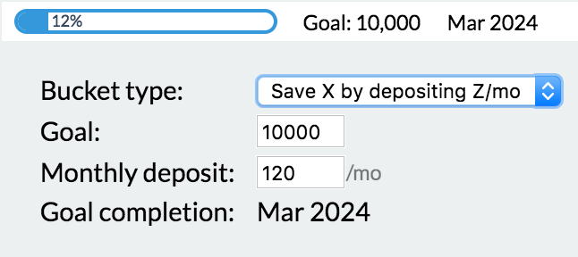
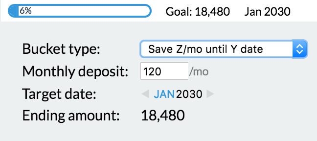

Buckets
After entering our accounts, we clicked on the Buckets tab to divide up our money into useful categories—buckets. It’s useful to think of buckets as literal buckets, filled with money, sitting around your house (or pretend they’re envelopes, if you prefer).
We make a bucket for every independent expense or goal. We currently have 63 buckets, but we didn’t start with that many. Don’t feel pressured to make a bunch. Here’s a sampling of our buckets:
- Food
- Mortgage
- Diapers
- Year’s supply
- Haircuts
- Charity
- Car repairs
- Car insurance
- Car registration
- Gas
- Vacation
- Parties
- Matt spending
- Clothing
- Clothing for kids
- Redo wood floors
- Costco membership
Bucket types
There are 5 different kinds of buckets. Change a bucket’s type by clicking the gear icon.
Plain old bucket
These buckets hold money until you take it out. We use this bucket type when we occasionally put extra money toward something.
Recurring expense

For this type of bucket, you specify how much to put in it every month. In general, buckets of this type fall into 3 categories:
- Expenses for exact, predictable amounts (e.g. Mortgage, Car insurance, Car registration, Costco membership, etc…)
- Expenses for varying, but similar amounts (e.g. Food, Diapers, Haircuts, etc…)
- Expenses for which you’ve decided how much you’ll spend on a regular basis (e.g. Charity, Vacation, Parties, Matt spending, Clothing, etc…)
Save X by Y date

Use this bucket if you know how much money you’ll need for something at a certain point in the future. You enter the target amount and date and Buckets computes how much you should add per month. Example uses: Tuition, House projects, a specific vacation, etc…
Save X by depositing Z/mo

With this type, choose a target amount you want saved and how much you can afford per month and Buckets will compute when you’ll reach your goal.
Save Z/mo until Y date

Choose a target date and how much you can afford per month and Buckets will compute how much you’ll end up with by the date.
Rain
Next
Learn about Transactions.